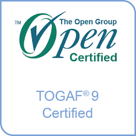

Architecte solution avec 10+ ans d'expérience dans des environnements critiques (spatial, défense, SaaS). Expertise transverse de la couche système jusqu'à l'architecture applicative.
Je suis Guillaume Escande, architecte Cloud et ingénieur DevOps actuellement chez Obeo. Fan de toujours d'informatique — du hardware au web, en passant par le cloud, le réseau et le code.
J'ai commencé par du développement C/C++ sur des librairies algorithmiques dans le domaine spatial (CNES), avant de naviguer entre intégration, infrastructure, DevOps et architecture. Cette vision full-stack m'a naturellement conduit au Craftsmanship : la conviction que la qualité du code et des pratiques est le vrai levier de performance durable.
Obeo — Colomiers
Responsable du MCO et de l'amélioration des services Cloud de la société (SaaS). Garantie d'un haut niveau de service, sécurité renforcée et mise en place fluide des environnements clients.
OneCraft — Capgemini
Architecte Fullstack et Tech Lead dans une entité d'expertise Craftsmanship (design authority interne). Accompagnement, formation et intervention sur projets clients en Clean Architecture.
Microcarb — Capgemini (CNES)
Définition de la stratégie de déploiement, intégration et exploitation du segment sol complet. Déploiement d'une chaîne CI/CD multi-sites (client + industriel).
CCS — Capgemini (DGA)
Déploiement automatisé d'un système complexe (défense). Sécurisation et hardening de plateforme selon exigences DGA. SIEM et supervision avancée.
GS2.0 — Capgemini (Airbus D&S)
Déploiement d'une plateforme de développement haute disponibilité multi-sites pour 50+ développeurs. Responsable sécurité projet.
CSO-CPM — Capgemini (CNES)
Librairies mission de la chaîne de programmation CSO (satellite d'observation). Évolution et maintenance CI/CD. Procédures d'installation et déploiement.

Je défends l'intérêt des containers face à la déferlante du serverless.
Premier talk public. Présentation de Sirius Web, outil de modélisation graphique.
Démarrer une conversation
Audit de projet, conseil en architecture, formation d'équipe ou accompagnement stratégique — je suis disponible pour discuter de vos besoins.
contact@escande.ovh